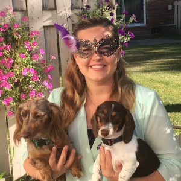
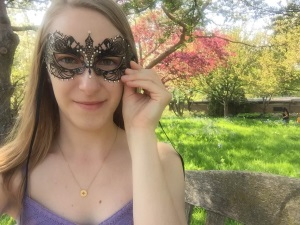
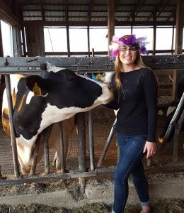
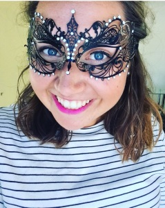

Devin
I met Devin when she was born 24 years ago. It was not a good time for me. I only got to spend 16 months as an only child. How fair is that? I am still a little bitter about it. She is currently off trying to do lawyer things on the opposite side of the country. Why? Who knows.Lauren B
Lauren and I met as freshmen at MSU when we both lived on floor four of East Akers. We then decided we could tolerate each other enough to live together for another three years. In all those years we were very studious and quiet and spent many weekends staying in to catch up on sleep. Her current line of work is making sure baby cows don't starve to death, which I'm sure they appreciate.

Lauren M
When I decided I was a big kid and needed to move out of the dorms, I found the cheapest apartment I could. Since I only had 2 friends at the time, we were forced to live with with some girl (AKA Lassie) who was transferring from some other less awesome university. I guess it worked out. She brought her obsession with Harry Potter and Mr. Darcy. Currently, she lives in Chicago and plays with Mac and Cheese all day. I didn't know that was a real job either.Katelyn
Katelyn completed the foursome of apartment 511. She was the most responsible and studious of all us, but I like to think we got to her eventually. She does have one major character flaw that I can't over look. She microwaves bacon. I think we can all agree she is a monster. Her current occupations are petting cows (among other things) and being married to Joe (see Groomsmen).

Jackie
I met Jackie in high school when my whole life was consumed by band. We devoted too much time to band. Like way too much. But I guess it was fun. Sometimes. We also had like every class together thanks to us being nerds and only taking AP classes. What were we thinking? Recently she decided to go on a four month road trip around the country. I have no idea where she is right now. She could be anywhere. Hopefully she'll be back by OctoberBetsy
The Wyns family made the lovely decision of moving to Michigan in the early 90s, where they happened to settle right next to the Bruen homestead. Since I was 4 years old and not in charge of most decisions in my life, I was forced on play dates with the neighbor girl. I guess she was alright because I never got rid of her. Until last year, that is, when she decided to move to the Netherlands and travel the world without me…Rachel
I met Rachel in early elementary school. I'm assuming I had no friends so I just kinda flung myself at whoever was closest, and she was the unlucky one that never got away. We then bonded over bands that screamed a lot and playing the clarinet. Those things don't really go together, but we made it work. She is currently the queen of retail and making plans for world conquest.Jenny
I met Jenny sometime around second grade, but who remembers that far back. Life was all a blur of recess and naps. The good old times. Currently, Jenny has been adopted by Dave and I and you can find her in our house most days of the week. Sometimes without us. She is sneaky. She says she does something with lawyers but mostly it sounds like her boss just takes them to happy hour every day.
▼
▼
▼
▼
▼
▼